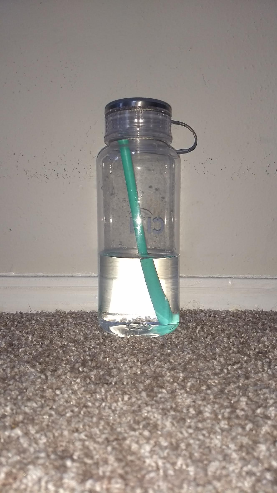

CASE STUDY BETWEEN GOOGLE LENS AND MobileNet
GOOGLE LENSVS
MobileNet
-
Test Image 1 - Air Freshener

- Test Image 2 - Bottle 
- Test Image 3 - Soap Dispenser
- Test Image 4 - Notebook
- Test Image 5 - Stool
CASE STUDY BETWEEN GOOGLE LENS AND MobileNet
GOOGLE LENSVS
MobileNet